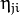
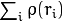
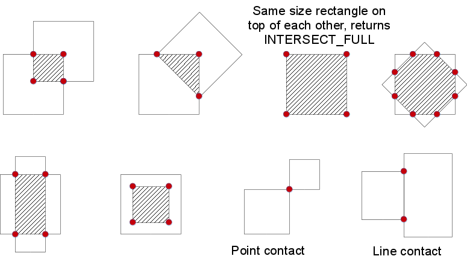

Calculates all of the moments up to the third order of a polygon or rasterized shape.
| Parameters: |
|
|---|
The function computes moments, up to the 3rd order, of a vector shape or a rasterized shape. The results are returned in the structure Moments defined as:
class Moments
{
public:
Moments();
Moments(double m00, double m10, double m01, double m20, double m11,
double m02, double m30, double m21, double m12, double m03 );
Moments( const CvMoments& moments );
operator CvMoments() const;
// spatial moments
double m00, m10, m01, m20, m11, m02, m30, m21, m12, m03;
// central moments
double mu20, mu11, mu02, mu30, mu21, mu12, mu03;
// central normalized moments
double nu20, nu11, nu02, nu30, nu21, nu12, nu03;
}
In case of a raster image, the spatial moments are computed as:
The central moments
 are computed as:
are computed as:

where is the mass center:

The normalized central moments are computed as:

Note
,
 , hence the values are not stored.
, hence the values are not stored.
The moments of a contour are defined in the same way but computed using the Green’s formula (see http://en.wikipedia.org/wiki/Green_theorem). So, due to a limited raster resolution, the moments computed for a contour are slightly different from the moments computed for the same rasterized contour.
Note
Since the contour moments are computed using Green formula, you may get seemingly odd results for contours with self-intersections, e.g. a zero area (m00) for butterfly-shaped contours.
See also
Calculates seven Hu invariants.
| Parameters: |
|
|---|
The function calculates seven Hu invariants (introduced in [Hu62]; see also http://en.wikipedia.org/wiki/Image_moment) defined as:
![\begin{array}{l} hu[0]= \eta _{20}+ \eta _{02} \\ hu[1]=( \eta _{20}- \eta _{02})^{2}+4 \eta _{11}^{2} \\ hu[2]=( \eta _{30}-3 \eta _{12})^{2}+ (3 \eta _{21}- \eta _{03})^{2} \\ hu[3]=( \eta _{30}+ \eta _{12})^{2}+ ( \eta _{21}+ \eta _{03})^{2} \\ hu[4]=( \eta _{30}-3 \eta _{12})( \eta _{30}+ \eta _{12})[( \eta _{30}+ \eta _{12})^{2}-3( \eta _{21}+ \eta _{03})^{2}]+(3 \eta _{21}- \eta _{03})( \eta _{21}+ \eta _{03})[3( \eta _{30}+ \eta _{12})^{2}-( \eta _{21}+ \eta _{03})^{2}] \\ hu[5]=( \eta _{20}- \eta _{02})[( \eta _{30}+ \eta _{12})^{2}- ( \eta _{21}+ \eta _{03})^{2}]+4 \eta _{11}( \eta _{30}+ \eta _{12})( \eta _{21}+ \eta _{03}) \\ hu[6]=(3 \eta _{21}- \eta _{03})( \eta _{21}+ \eta _{03})[3( \eta _{30}+ \eta _{12})^{2}-( \eta _{21}+ \eta _{03})^{2}]-( \eta _{30}-3 \eta _{12})( \eta _{21}+ \eta _{03})[3( \eta _{30}+ \eta _{12})^{2}-( \eta _{21}+ \eta _{03})^{2}] \\ \end{array}](../../../_images/math/6f3e6a1dd05317afa7a9317d0d0e87bc3dacf7fd.png)
where  stands for .
These values are proved to be invariants to the image scale, rotation, and reflection except the seventh one, whose sign is changed by reflection. This invariance is proved with the assumption of infinite image resolution. In case of raster images, the computed Hu invariants for the original and transformed images are a bit different.
See also
computes the connected components labeled image of boolean image image with 4 or 8 way connectivity - returns N, the total number of labels [0, N-1] where 0 represents the background label. ltype specifies the output label image type, an important consideration based on the total number of labels or alternatively the total number of pixels in the source image.
| Parameters: |
|
|---|
Finds contours in a binary image.
| Parameters: |
|
|---|
The function retrieves contours from the binary image using the algorithm [Suzuki85]. The contours are a useful tool for shape analysis and object detection and recognition. See squares.c in the OpenCV sample directory.
Note
Source image is modified by this function. Also, the function does not take into account 1-pixel border of the image (it’s filled with 0’s and used for neighbor analysis in the algorithm), therefore the contours touching the image border will be clipped.
Note
If you use the new Python interface then the CV_ prefix has to be omitted in contour retrieval mode and contour approximation method parameters (for example, use cv2.RETR_LIST and cv2.CHAIN_APPROX_NONE parameters). If you use the old Python interface then these parameters have the CV_ prefix (for example, use cv.CV_RETR_LIST and cv.CV_CHAIN_APPROX_NONE).
Note
Approximates a polygonal curve(s) with the specified precision.
| Parameters: |
|
|---|
The functions approxPolyDP approximate a curve or a polygon with another curve/polygon with less vertices so that the distance between them is less or equal to the specified precision. It uses the Douglas-Peucker algorithm http://en.wikipedia.org/wiki/Ramer-Douglas-Peucker_algorithm
See https://github.com/Itseez/opencv/tree/master/samples/cpp/contours2.cpp for the function usage model.
Approximates Freeman chain(s) with a polygonal curve.
| Parameters: |
|
|---|
This is a standalone contour approximation routine, not represented in the new interface. When FindContours() retrieves contours as Freeman chains, it calls the function to get approximated contours, represented as polygons.
Calculates a contour perimeter or a curve length.
| Parameters: |
|
|---|
The function computes a curve length or a closed contour perimeter.
Calculates the up-right bounding rectangle of a point set.
| Parameters: |
|
|---|
The function calculates and returns the minimal up-right bounding rectangle for the specified point set.
Calculates a contour area.
| Parameters: |
|
|---|
The function computes a contour area. Similarly to moments() , the area is computed using the Green formula. Thus, the returned area and the number of non-zero pixels, if you draw the contour using drawContours() or fillPoly() , can be different. Also, the function will most certainly give a wrong results for contours with self-intersections.
Example:
vector<Point> contour;
contour.push_back(Point2f(0, 0));
contour.push_back(Point2f(10, 0));
contour.push_back(Point2f(10, 10));
contour.push_back(Point2f(5, 4));
double area0 = contourArea(contour);
vector<Point> approx;
approxPolyDP(contour, approx, 5, true);
double area1 = contourArea(approx);
cout << "area0 =" << area0 << endl <<
"area1 =" << area1 << endl <<
"approx poly vertices" << approx.size() << endl;
Finds the convex hull of a point set.
| Parameters: |
|
|---|
The functions find the convex hull of a 2D point set using the Sklansky’s algorithm [Sklansky82] that has O(N logN) complexity in the current implementation. See the OpenCV sample convexhull.cpp that demonstrates the usage of different function variants.
Note
Finds the convexity defects of a contour.
| Parameters: |
|
|---|
The function finds all convexity defects of the input contour and returns a sequence of the CvConvexityDefect structures, where CvConvexityDetect is defined as:
struct CvConvexityDefect
{
CvPoint* start; // point of the contour where the defect begins
CvPoint* end; // point of the contour where the defect ends
CvPoint* depth_point; // the farthest from the convex hull point within the defect
float depth; // distance between the farthest point and the convex hull
};
The figure below displays convexity defects of a hand contour:

Fits an ellipse around a set of 2D points.
| Parameters: |
|
|---|
The function calculates the ellipse that fits (in a least-squares sense) a set of 2D points best of all. It returns the rotated rectangle in which the ellipse is inscribed. The algorithm [Fitzgibbon95] is used. Developer should keep in mind that it is possible that the returned ellipse/rotatedRect data contains negative indices, due to the data points being close to the border of the containing Mat element.
Note
Fits a line to a 2D or 3D point set.
| Parameters: |
|
|---|
The function fitLine fits a line to a 2D or 3D point set by minimizing
 where
 is a distance between the
point, the line and
is a distance function, one of the following:
is a distance between the
point, the line and
is a distance function, one of the following:
distType=CV_DIST_L2
distType=CV_DIST_L1
distType=CV_DIST_L12
distType=CV_DIST_FAIR
distType=CV_DIST_WELSCH
distType=CV_DIST_HUBER
The algorithm is based on the M-estimator (
http://en.wikipedia.org/wiki/M-estimator
) technique that iteratively fits the line using the weighted least-squares algorithm. After each iteration the weights
 are adjusted to be inversely proportional to
.
are adjusted to be inversely proportional to
.
Tests a contour convexity.
| Parameters: |
|
|---|
The function tests whether the input contour is convex or not. The contour must be simple, that is, without self-intersections. Otherwise, the function output is undefined.
Finds a rotated rectangle of the minimum area enclosing the input 2D point set.
| Parameters: |
|
|---|
The function calculates and returns the minimum-area bounding rectangle (possibly rotated) for a specified point set. See the OpenCV sample minarea.cpp . Developer should keep in mind that the returned rotatedRect can contain negative indices when data is close the the containing Mat element boundary.
Finds the four vertices of a rotated rect. Useful to draw the rotated rectangle.
| Parameters: |
|
|---|
The function finds the four vertices of a rotated rectangle. This function is useful to draw the rectangle. In C++, instead of using this function, you can directly use box.points() method. Please visit the tutorial on bounding rectangle for more information.
Finds a triangle of minimum area enclosing a 2D point set and returns its area.
| Parameters: |
|
|---|
The function finds a triangle of minimum area enclosing the given set of 2D points and returns its area. The output for a given 2D point set is shown in the image below. 2D points are depicted in red and the enclosing triangle in yellow.

The implementation of the algorithm is based on O’Rourke’s [ORourke86] and Klee and Laskowski’s [KleeLaskowski85] papers. O’Rourke provides a algorithm for finding the minimal enclosing triangle of a 2D convex polygon with n vertices. Since the minEnclosingTriangle() function takes a 2D point set as input an additional preprocessing step of computing the convex hull of the 2D point set is required. The complexity of the convexHull() function is which is higher than . Thus the overall complexity of the function is .
Note
See opencv_source/samples/cpp/minarea.cpp for a usage example.
Finds a circle of the minimum area enclosing a 2D point set.
| Parameters: |
|
|---|
The function finds the minimal enclosing circle of a 2D point set using an iterative algorithm. See the OpenCV sample minarea.cpp .
Compares two shapes.
| Parameters: |
|
|---|
The function compares two shapes. All three implemented methods use the Hu invariants (see
HuMoments() ) as follows (
 denotes object1,:math:B denotes object2 ):
denotes object1,:math:B denotes object2 ):
method=CV_CONTOURS_MATCH_I1
method=CV_CONTOURS_MATCH_I2
method=CV_CONTOURS_MATCH_I3
where
and
are the Hu moments of
and
 , respectively.
, respectively.
Performs a point-in-contour test.
| Parameters: |
|
|---|
The function determines whether the point is inside a contour, outside, or lies on an edge (or coincides with a vertex). It returns positive (inside), negative (outside), or zero (on an edge) value, correspondingly. When measureDist=false , the return value is +1, -1, and 0, respectively. Otherwise, the return value is a signed distance between the point and the nearest contour edge.
See below a sample output of the function where each image pixel is tested against the contour.

| [Fitzgibbon95] | Andrew W. Fitzgibbon, R.B.Fisher. A Buyer’s Guide to Conic Fitting. Proc.5th British Machine Vision Conference, Birmingham, pp. 513-522, 1995. |
| [Hu62] |
|
| [KleeLaskowski85] | Klee, V. and Laskowski, M.C., Finding the smallest triangles containing a given convex polygon, Journal of Algorithms, vol. 6, no. 3, pp. 359-375 (1985) |
| [ORourke86] | O’Rourke, J., Aggarwal, A., Maddila, S., and Baldwin, M., An optimal algorithm for finding minimal enclosing triangles, Journal of Algorithms, vol. 7, no. 2, pp. 258-269 (1986) |
| [Sklansky82] | Sklansky, J., Finding the Convex Hull of a Simple Polygon. PRL 1 $number, pp 79-83 (1982) |
| [Suzuki85] | Suzuki, S. and Abe, K., Topological Structural Analysis of Digitized Binary Images by Border Following. CVGIP 30 1, pp 32-46 (1985) |
| [TehChin89] | Teh, C.H. and Chin, R.T., On the Detection of Dominant Points on Digital Curve. PAMI 11 8, pp 859-872 (1989) |
Finds out if there is any intersection between two rotated rectangles. If there is then the vertices of the interesecting region are returned as well.
| Parameters: |
|
|---|
The following values are returned by the function:
- INTERSECT_NONE=0 - No intersection
- INTERSECT_PARTIAL=1 - There is a partial intersection
- INTERSECT_FULL=2 - One of the rectangle is fully enclosed in the other
Below are some examples of intersection configurations. The hatched pattern indicates the intersecting region and the red vertices are returned by the function.
 or
or  ) of 2D points (
) of 2D points (